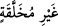

yetmesinden ya da onun meydana geleceğinden şüphede iseniz “şunu bilin ki, biz sizi”
sizden her ferdi icmâlî olarak Âdem (a.s.)’ın yaratılması zımnında “topraktan,”
yarattık. Bir hadiste “Allah yeryüzünü boyun eğmiş kıldı. Siz onun omuzlarında
(üzerinde) dolaşırsınız. Âdemoğullarını da alçakgönüllü yapmak için topraktan
yarattı. Ancak onlar büyüklenerek ve kibirlenerek yüz çevirdiler. Kalbinde hardal
danesi ağırlığında kibir olan asla cennete giremez.”[4] buyrulmuştur.
“Sonra” tafsîlî olarak “nutfeden,” nutfe, az olsun çok olsun, saf su demektir. Erkeğin
suyu, bu kelime ile ifâde edilir. “Sonra alekadan (aşılanmış yumurtadan),” menîden
meydana gelen pıhtılaşmış bir parça kandan “sonra uzuvları (önce)” yâni yaratılışı ve
sûreti henüz “belirsiz, (sonra)” yaratılışı ve sûreti “belirlenmiş canlı” alekadan
meydana gelen bir çiğnem, yani bir “et parçasından (uzuvları zamanla oluşan
ceninden) yarattık” yâni yaratılışınızın başlangıcına bakın ki şüpheniz zâil olsun.
Âyette kastedilen “mudğa”nın durumu, ilk olarak üzerinde uzuvların belirmediği bir
parça et olduğunu, bundan sonra yavaş yavaş belirdiğini açıklamaktır. Fakat melekesi
olmadığı için “ geriye bırakılmıştır. el-İrşâd’da böyle denilmiştir. Necmeddîn
(Dâye)’nin et-Te’vîlât’taki şu sözleri de onu güçlendirmektedir: “ kendisine ruh
üflenmiş, “ ise rûhu olmayan sûret demektir.”
Bir hadiste şöyle buyrulmuştur: “Sizden birinizin yaratılışının başlangıcı,”
yaratıldığı madde “annesinin karnında” ifâdesi bütünün zikredilip bir bölümünün
kastedilmesi kabilinden olup annesinin rahminde, demektir. “Kırk günde derlenir
toplanır.” korunup yerleştirilir.
İbn Mes’ûd (r.a.)’dan rivâyet edildiğine göre nutfe rahme düşüp Allah ondan bir
insan yaratmayı murad ettiği zaman kadının derisine, her tırnağın ve kılın altına dağılır
ve kırk gün kalır. Sonra da kan olarak rahme iner. İşte onun derlenip toplanması budur.
“Sonra ikinci kırk günlük süre içinde pıhtı hâline döner.
Sonra da bir o kadar zaman içinde bir parça et olur. Daha sonra Allah bir melek
gönderir ve melek, ona ruh üfler.” Bu, sûret vermenin genellikle ikinci kırk günde
olduğuna delâlet eder. Fakat kastedilen ona sûret verilmesinin takdir edilmesidir. Çünkü
genellikle bir parça et olmadan önce sûret verme gerçekleşmez. “Bu melek dört şeyle;
anne rahmindeki canlının rızkını, ecelini,” yâni hayat müddetini “amelini, kötü” şakî,
yâni cehennem kendisine vâcib olmuş “biri mi, yoksa iyi” saîd, yâni cennet kendisine
vâcib olmuş “biri mi olacağını yazmakla emrolunur.”[5] Hadiste şakî önce
zikredilmiştir. Çünkü insanların çoğu öyledir.
“Ki size (kudretimizi) gösterelim.” yâni sizi bu benzersiz tarzda yarattık ki böylece
size tekrar diriltilip mahşerde toplanma hususunu açıklayalım. Çünkü hayatın kokusunu
hiç almamış topraktan beşeri yaratmaya kâdir olan, onu tekrar yaratmaya elbette
kâdirdir
İnsanın öldükten sonra dirilmesi senin zihninde aşikâr olmadıysa